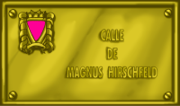

Espacios pa la
diversidá
Magnus Hirschfeld y los triángulos roses
Terror nazi a la escontra los gais
Cuando se redactó en 1871 el nuevu códigu penal alemás tres la unificación del país, les rellaciones sexuales ente homes quedaron castigaes con prisión (artículu 175). Imponíase asina la visión conservadora del códigu de Prusia sobre'l de les llexislaciones más avanzaes, como Baviera o Hannover que, en 1813 y 1840 respeutivamente, despenalizaben la homosexualidá, siguiendo la influencia de la Illustración francesa y del códigu penal napoleónicu.
Nesti contestu, entamen a llevantase voces discordantes con esta llexislación punitiva hacia los gais, ente les que sobrasal la de Magnus Hirschfeld (1868-1935), que punxo al en funcionamientu el Comité Científicu y Humanitariu (1897), con oxetivos ente los que s'atopaba l'analís científicu de la homosexualidá y l'abrogación del códigu 175. El llabor de Magnus Hirschfeld llogró que los socialdemócratas ficieren la petición al Parllamentu alemán en 1898 pa que l'artículu en cuestión quedare abrogáu, que nun tuvo ésitu. Más alantre llogró tamién l'apoyu de los comunistes y en 1929 un comité parllamentariu especial recomendaba l'abolición del artículu en cuestión. Nun tuvo ésitu, a pesar del ampliu respaldu que tuvo esta petición por parte d'importantes científicos, artistes y escritores alemantes (ente otros Albert Eisntein).
L'amplia mayoría que los nazis algamaron esi añu nes eleiciones paró cualesquier reforma del Códigu. Cuando al final Hitler llega'l poder en 1933, intensificose la persecución sobre los gais. Na propaganda nazi los homosexuales presentábanse como responsables tanto de la decadencia moral que al so xuiciu vivía Alemania como del desastre económicu de la República de Weimer.
El seis de mayu de 1933, los nazis destruyeron y predieron-y fuéu al famosu Institutu d'Investigaciones Sexuales, otra creación de Magnus Hirschfeld (que pudo exiliase en Francia, onde morrió), desapaeciendo asina'l más importante archivu y biblioteca de temática GLBT del mundu. La persecución hacia los gais intensificose en toda Alemania, n'especial tres la eliminación d'Ernest Röhm y el so camarialla de camises pardes na "Nuechi de los cuchiellos llargos" (xustamente'l 28 xunu de 1934), quienes fueron presentaos lluéu como unos "gochos homosexuales". Al añu siguiente -otra vegada más el 28 xunu- modifícase l'artículu 175 pa endurecer les penes contra los gais.
 Pocu a pocu los nazis desendolquen una campaña sistemática de represión ensin precedentees na Historia, escontra los que consideren los sos enemigos y meten en campos de concentración y esterminiu: Gais, amás de los xudios, xitanos o antifacistes. Nestos campos, de los que son tristemente famosos Auschwitz, Mauthausen o Treblinka, los gais fueron obligaos a llevar un triángulu rosa, como distintivu nos sos traxes de presos, y una vida miserable, porque en xeneral a la homofobia de los propios nazis xuntábase, en non poques ocasiones, la de los demás internos. Amás, al finar la guerra nun hubo nengún resarcimientu pa ellos, porque la homosexualidá siguía penalizada na mayor parte los países lliberaos del xuyu nazi.
Pocu a pocu los nazis desendolquen una campaña sistemática de represión ensin precedentees na Historia, escontra los que consideren los sos enemigos y meten en campos de concentración y esterminiu: Gais, amás de los xudios, xitanos o antifacistes. Nestos campos, de los que son tristemente famosos Auschwitz, Mauthausen o Treblinka, los gais fueron obligaos a llevar un triángulu rosa, como distintivu nos sos traxes de presos, y una vida miserable, porque en xeneral a la homofobia de los propios nazis xuntábase, en non poques ocasiones, la de los demás internos. Amás, al finar la guerra nun hubo nengún resarcimientu pa ellos, porque la homosexualidá siguía penalizada na mayor parte los países lliberaos del xuyu nazi.
Magnus Hirschfeld punxo les bases d'un discursu nuevu hacia la homosexualidá, pero toco-y vivir una época turbulenta y les sos importantes aportaciones científiques fueron silenciaes durante años. El so nome, al igual que'l de Triángulo rosa, puestos nes plaques que dan nome a cualesquier espaciu públicu de los nuesos pueblos o ciudaes, amás d'un homenaxe a quienes sufieron la brutalidá y sinrazón nazis, han ser un elementu de reivindicación de la diversidá y el respetu, frente a unos vezos d'odiu y barbarie qu'enxamás han tener sitiu na nuesa sociedá.